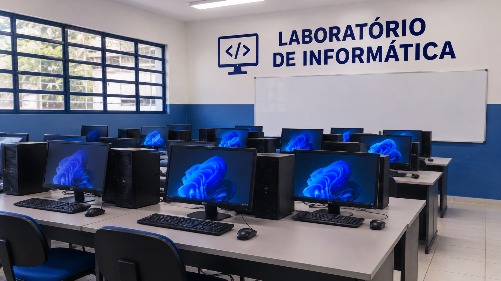
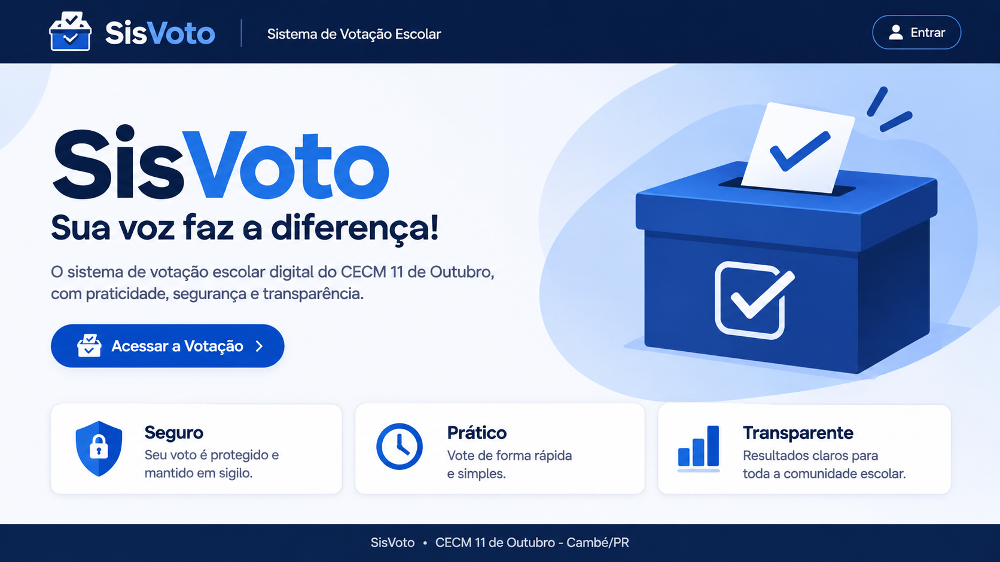
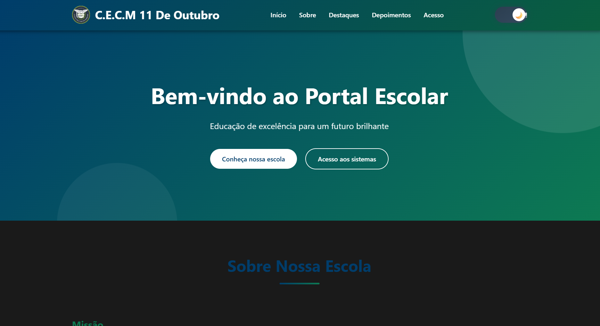
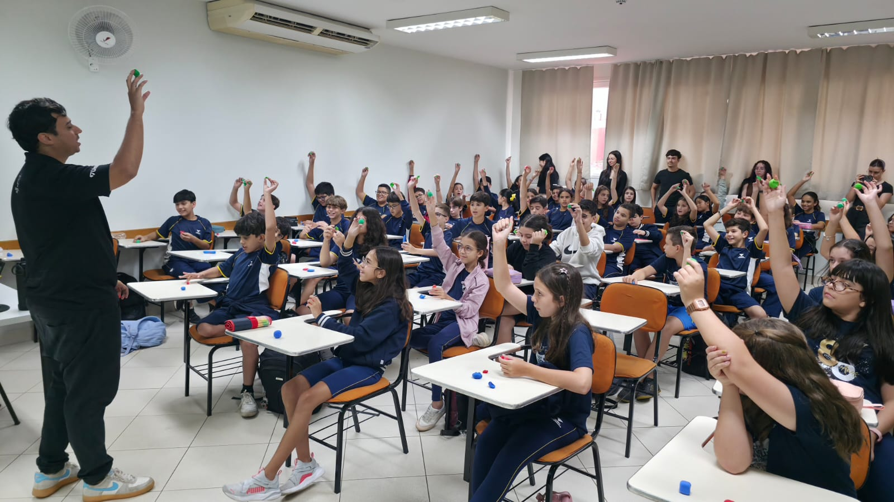

Projetos desenvolvidos no colégio (ensino médio)

No segundo ano do ensino médio, a direção do meu antigo colégio decidiu, junto com o Senai, criar um laboratório de informática para alunos e professores. Eu e meus colegas ajudamos a instalar cerca de 25 computadores e montamos os cabos de rede de par trançado, com a ajuda de um professor.

Minha turma formou uma equipe com um professor para desenvolver um sistema de votação digital. O professor ficou responsável pelo banco de dados; eu desenvolvi a parte visual do sistema, e meus colegas conectaram o back-end ao front-end.

Eu e meus colegas criamos um modelo de site para a nossa escola. O site seria integrado ao sistema de votação digital, utilizado na eleição do grêmio estudantil, e a um sistema de enquetes para decidir eventos, refeições em datas especiais, entre outras coisas.
Projetos desenvolvidos na faculdade

Na UniFil, durante meu primeiro ano da faculdade, participei de dois projetos: Londrinense Tech e Pensamento Computacional. No Londrinense Tech, atuei como monitor de uma turma de aproximadamente 60 alunos do 6º ano do Colégio Londrinense. O objetivo do programa é ensinar lógica de programação por meio de uma pseudolinguagem (Portugol) e introduzir JavaScript, para que os alunos se familiarizem com uma linguagem de programação.

No projeto Pensamento Computacional, também atuo como monitor. Ensinamos jovens do ensino médio a criar páginas com HTML, CSS e JavaScript, além de lógica de programação.